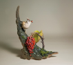

|  | 作品名稱 | 先馳得點 (冠羽畫眉) Early Bird Gets a Point: a Formosan Yuhina |
| 作者 | 李國欽Rolando Lee | |
| 年代 | 2012 | |
| 尺寸 | 31x28x37 cm | |
| 作品說明 | 臺灣特有種鳥類：頂著龐克頭的栗褐色羽冠、黑色的過眼線，和弧形頰線的逗趣八字鬍。加上“To meet you”的特殊叫聲，很自然就成為容易辨識的明星物種。個性活潑好動，在林間枝椏不停的跳動，啄食花蜜，尤其在山櫻花盛開與山桐子成熟時，常會前來穿梭覓食。 本作品靈感來自於山桐子成熟時的情景，以陶瓷釉色呈現山桐子不同階段的紅色熟果，並捏塑冠羽畫眉穿梭山桐子覓食的瞬間。 |